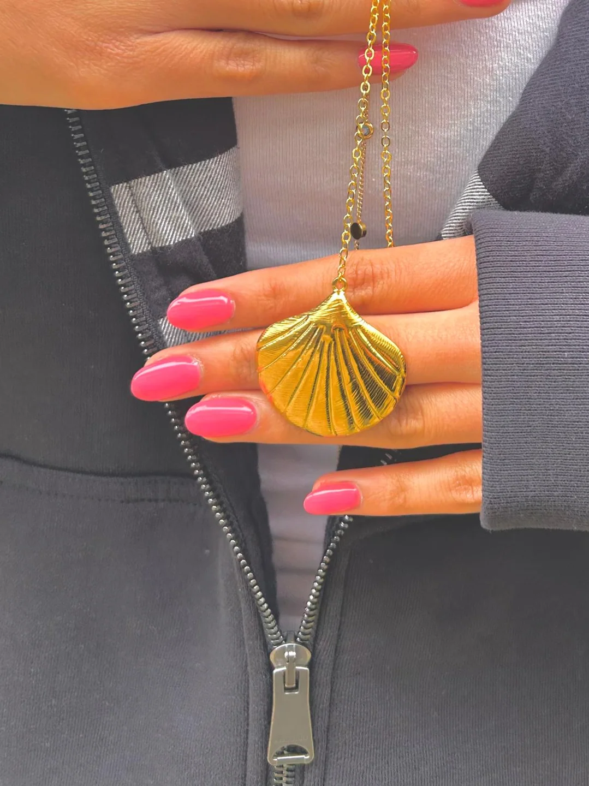
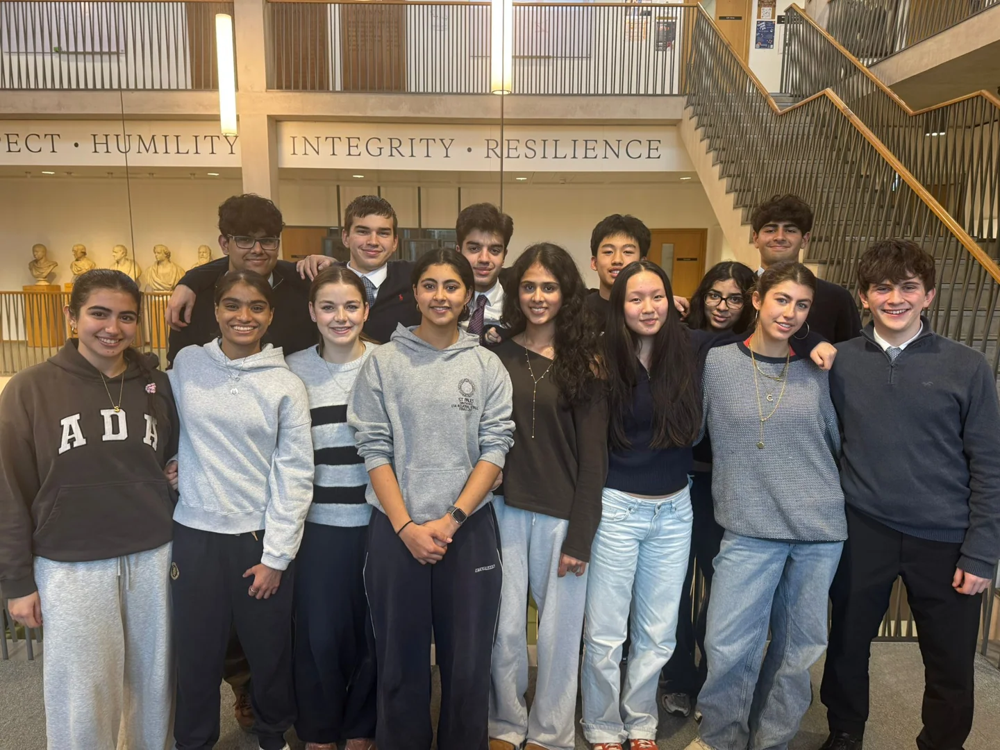

Avani Jewels.
Building a business with purpose.
Digital and Technology Director. I directed digital strategy for Avani Jewels, a 15-person student-run company creating inclusive jewellery designed for people with dexterity issues and also for customers without those challenges. Our team achieved £1,121.39 in total profit and received the Sustainability Award at the North & South London Finals.
Pitching Avani Jewels.
Footage from our team's enterprise presentation.
Strategy, products and the pitch.
Building a company combined individual responsibility with decisions taken together by our team.


Designing jewellery for everyone.
Our central goal at Avani Jewels was to create jewellery that accommodates people with dexterity issues while remaining stylish and appealing to people without those challenges. We wanted inclusive design to be part of an everyday product, rather than something separate.
As part of Young Enterprise, our student-led company developed and sold a collection that included sea-inspired necklaces and delicate pendants, which we presented through market displays and customer-facing events.
Turning teamwork into measurable results.
The company recorded £1,121.39 in profits and won a Sustainability Award at the North & South London Finals. Alongside the commercial experience, the project developed my communication and team-leadership skills.